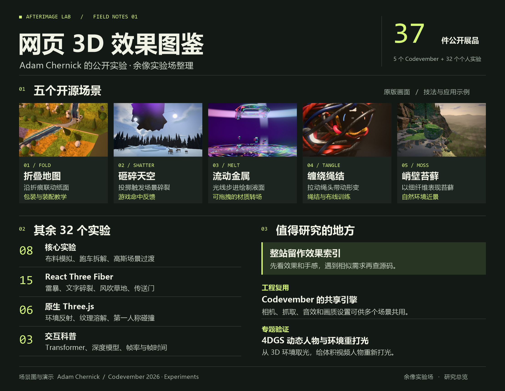

效果参考
从画面找到需要的技法
折叠地图、液态金属、碎裂和苔藓可以作为视觉与操作样片。先试玩，再按需求查对应源码。
应用设想包括装配教学、商品材质展示、游戏反馈和自然环境近景。
查看流动金属REAL-TIME 3D / EXHIBITION 01
Adam Chernick 个人制作与持续积累的网页 3D 实验，部分作品基于 Three.js 等开源示例做扩展与组合。这里整理已有画面、交互和实现入口，按实际需求判断复用价值。

整站留作效果索引，按实际项目需求挑选实现深入研究。
这个合集的能力是把材质、物理、光照和交互组织成可试玩的三维场景。我们的判断是，多数作品适合做效果参考；有具体需求时，继续研究共享引擎或某项场景实现。
原作者制作场景并保留开源生态的引用。本展页接入原版演示，整理中文原理、应用设想和来源。作者对实验来源的说明
效果参考
折叠地图、液态金属、碎裂和苔藓可以作为视觉与操作样片。先试玩，再按需求查对应源码。
应用设想包括装配教学、商品材质展示、游戏反馈和自然环境近景。
查看流动金属工程复用
Codevember 将渲染、后处理、相机、抓取、音效和设置放在共享引擎里。每个场景通过独立目录接入。
做一系列互动作品时，可以研究场景接口和公共能力怎样协作。
阅读共享引擎源码专题验证
4DGS 示例把体积视频人物放进静态高斯场景，并从环境立方贴图计算球谐光照，给人物重新打光。
做数字人导览时，可以验证人物换场景后的光色协调、播放和移动体验。
查看人物与生成场景| 系列 | 数量 | 代表效果 | 应用参考 |
|---|---|---|---|
| Codevember | 5 | 折叠、碎裂、液态金属、绳结、苔藓 | 交互教程、视觉转场、游戏反馈 |
| 核心实验 | 8 | 布料模拟、跑车拆解、3DGS / 4DGS | 产品说明、环境交互、空间导览 |
| React Three Fiber | 15 | 文字碎裂、雷暴、草地、水面、传送门 | 互动网页、氛围场景、空间切换 |
| 原生 Three.js | 6 | 环境反射、纹理溶解、第一人称碰撞 | 材质预览、视觉反馈、空间漫游 |
| 交互科普 | 3 | Transformer、深度模型、帧时间与帧率 | 把抽象过程做成可操作的解释 |
目录对应 2026 年 11 月 6 日收录的 37 个公开展品。各模块嵌入作者在线原版场景，中文解读、用途设想和研究判断由本展页整理。作者站和源码会继续更新。
用于复用评估时，继续核对目标设备上的加载、帧率、操作和素材条件。本轮记录覆盖效果体验与资料梳理。
共享引擎看公共能力如何供各场景调用。4DGS 示例看静态环境、动态人物与环境重打光的协作。用途说明记录的是可迁移方向。
本轮已完成效果索引、原版演示接入、原理与价值归纳。以下是按实际需求继续研究的方向。
| 方向 | 当前范围 | 继续扩展的价值 |
|---|---|---|
| 效果二次开发 | 接入作者原版场景，尚未移植或修改上游效果源码。 | 按需增加参数、替换素材，将某项效果用于自己的页面。 |
| 产品化应用 | 装配教程、商品展示、数字人导览等保留为用途设想。 | 接真实内容与操作流程，检验效果是否帮助用户完成任务。 |
| 共享引擎与性能 | 已识别公共能力，尚未拆成独立组件，也未系统测量多设备帧率、显存和加载成本。 | 确定可以复用的场景接口、画质策略和设备覆盖范围。 |
| 3DGS / 4DGS 深入 | 已整理场景与重打光做法，人物素材接入和播放条件继续按专题核验。 | 验证动态讲解员、空间切换与环境光色协调的实际体验。 |
| 目录增补 | 目录与引导图保留 11 月 6 日的 37 项收录。作者后续日更和新增作品尚未并入。 | 按需求补充新的技法和对照案例，保留本轮研究记录。 |
公开页依赖作者站加载原版效果。部分场景需要 WebGPU；两项 4DGS 需要跨源隔离环境，页面会在需要时提示从原站播放。源码、SDK 和素材的复用范围按各自许可核对。
没有找到展品。试试「布料」「WebGPU」或「反射」。